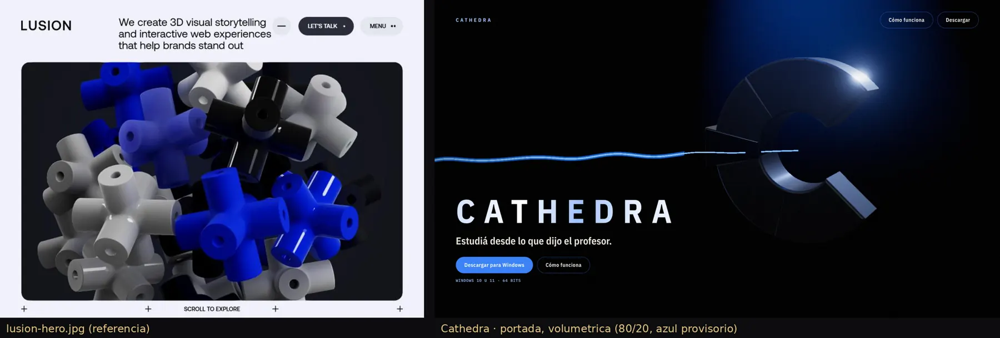
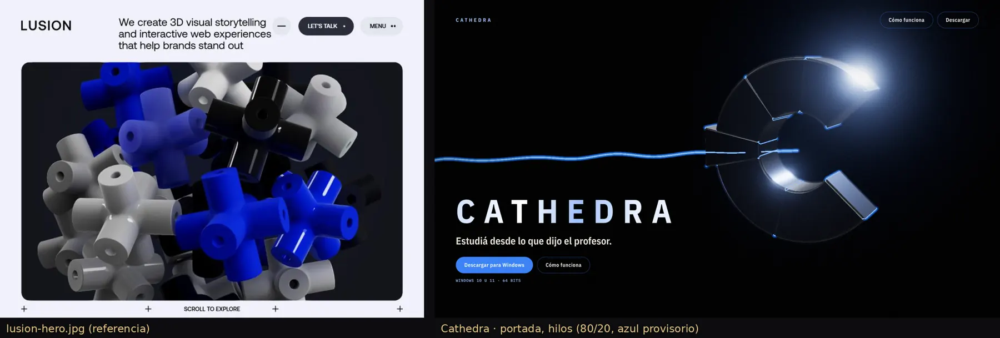
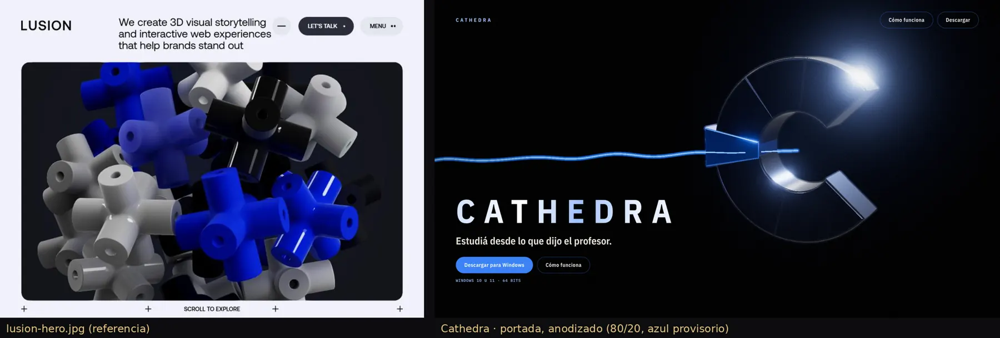
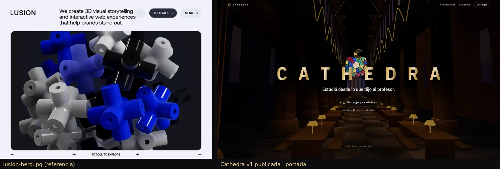
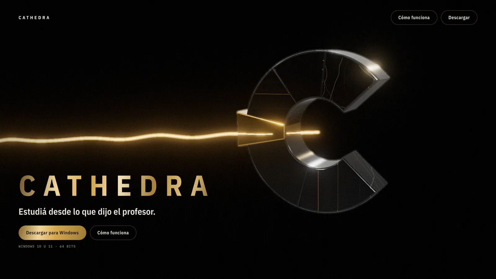
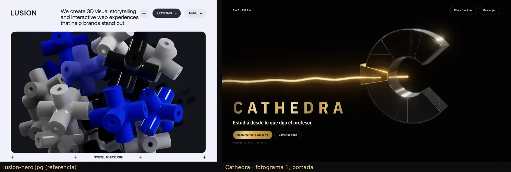
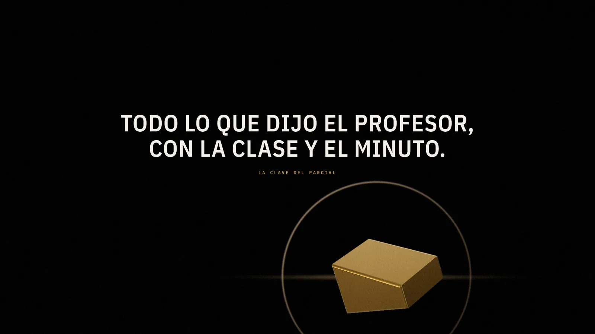
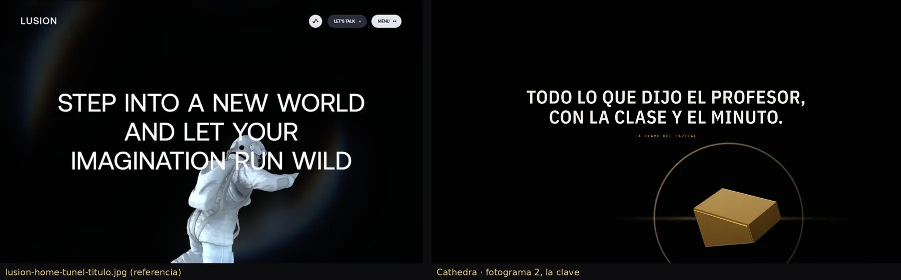
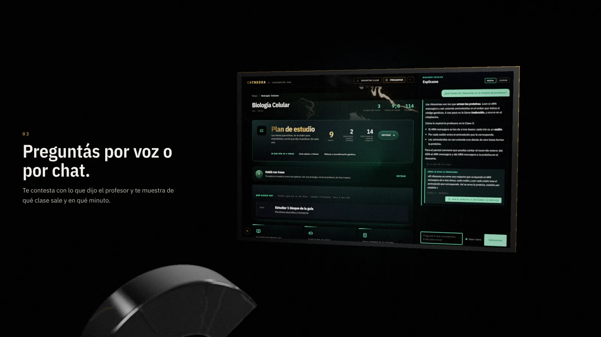
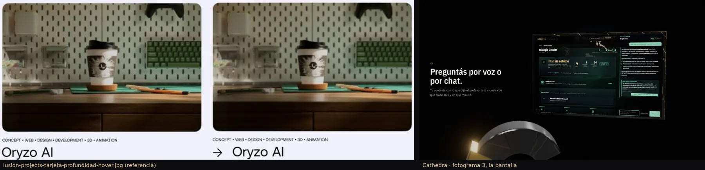

Para revisar · sin enlace desde el sitio
Dirección visual
6 de octubre de 2026 · cuadros a 1920×1080, dibujo por software (material y luz valen; el ritmo no)
La nave de la v1 y la v2 se leía como un juego: cientos de piezas con color plano y luz pareja. La dirección nueva sigue lo que tienen en común las referencias: pocos objetos, materiales que parecen fotografía, mucho vacío oscuro y la tipografía como voz. El héroe es la C de dovelas de la marca hecha escultura: mármol negro con barniz y vetas, la clave de oro pulido, luz de estudio, profundidad de campo, grano y viñeta.
Puntajes (0 a 10; se publica con promedio ≥ 8 y ningún criterio < 7)
| Cuadro | Materiales | Luz | Vacío | Acabado | Tipografía | Concepto | Sin juego | Marca | Promedio | ¿Pasa? |
|---|---|---|---|---|---|---|---|---|---|---|
| v1 publicada · portada | 2 | 3 | 2 | 3 | 6 | 4 | 2 | 6 | 3.50 | no |
| v2 publicada · portada | 3 | 4 | 3 | 4 | 6 | 4 | 3 | 6 | 4.12 | no |
| Fotograma 1 · portada (4.ª vuelta) | 7.5 | 7.5 | 8 | 8 | 8 | 8 | 8 | 9 | 8.00 | sí |
| Fotograma 2 · la clave (5.ª vuelta) | 8 | 7.5 | 9 | 8 | 8 | 8.5 | 8 | 8.5 | 8.19 | sí |
| Fotograma 3 · la pantalla (5.ª vuelta) | 7.5 | 7.5 | 8 | 8 | 8 | 9 | 8 | 8.5 | 8.06 | sí |
Los tres pasan. En la quinta vuelta, la clave lleva grabados la clase y el minuto sobre oro cepillado (el objeto cuenta el concepto, no sólo el texto) y una luz blanda detrás recorta su silueta; la pantalla va en un marco del mismo mármol veteado y adelante, fuera de foco, asoma la C con su clave de oro.
Variantes de material · 80 % Onyx / 20 % Candy Blue (provisorias)
Pedido del 6/10 18:38. Las indicaciones de las 18:32 y 18:36 no llegaron a esta sesión: el azul usado (#3B82F6) y el lugar del oro de la marca son un supuesto a confirmar. El fondo y la materia son Onyx; el azul va en la luz, los cantos, el hilo, las marcas y los botones. Ninguna pasa todavía; la que más promete es el metal anodizado (la clave azul como único objeto de color) y la luz volumétrica (la mejor luz).
| Cuadro | Materiales | Luz | Vacío | Acabado | Tipografía | Concepto | Sin juego | Marca | Promedio | ¿Pasa? |
|---|---|---|---|---|---|---|---|---|---|---|
| Portada · luz volumétrica | 7 | 8 | 8 | 7.5 | 8 | 8 | 8 | 7 | 7.69 | no |
| Portada · hilos de luz | 7 | 7.5 | 8 | 7.5 | 8 | 8 | 7 | 7.5 | 7.56 | no |
| Portada · metal anodizado | 7.5 | 7.5 | 8 | 7.5 | 8 | 8 | 8 | 7.5 | 7.75 | no |



Línea de base: la v1 publicada

Fotograma 1 · portada


Fotograma 2 · la clave


Fotograma 3 · la pantalla

